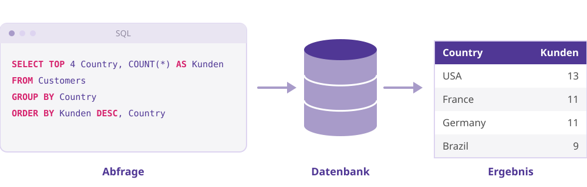
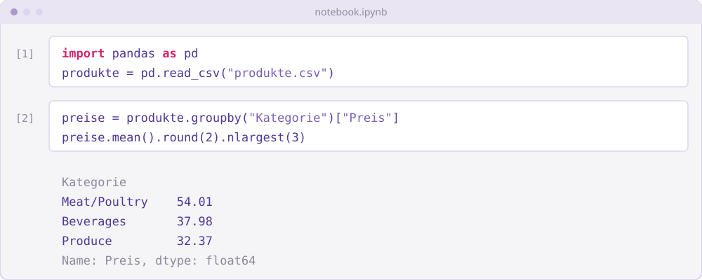
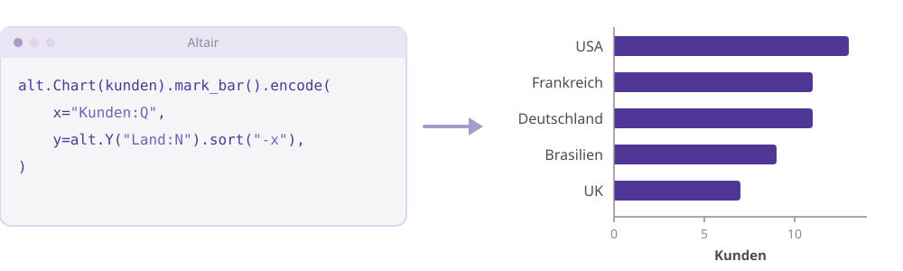
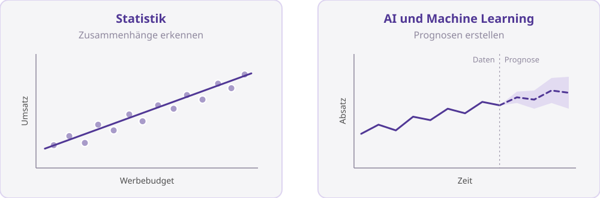
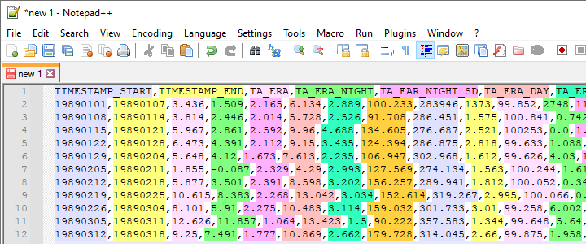
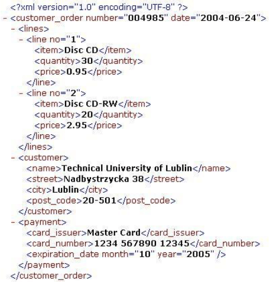
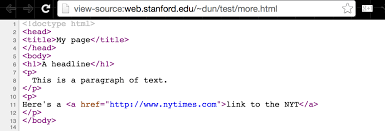

Wann habt ihr zuletzt
eine Entscheidung
auf Basis von Zahlen getroffen,
die ihr selbst nicht
nachprüfen konntet?
Ausgeschriebenes Jahresgehalt, gleicher Beruf mit und ohne SQL, Großbritannien
„Marketing-Manager mit SQL-Kenntnissen verdienen 41 % mehr als jene ohne.“ Burning Glass (2019), USA
Quellen: Burning Glass Technologies im Auftrag des UK Department for Digital, Culture, Media & Sport (2019): No Longer Optional: Employer Demand for Digital Skills, S. 55 · Burning Glass Technologies (2019): The Hybrid Job Economy, S. 4 (übersetzt)
| Ohne Datenkompetenz | Mit Datenkompetenz |
|---|---|
| Anfrage an BI/IT, zwei Wochen warten | 20 Minuten, eine SQL-Abfrage |
| Die Antwort trifft die Frage nur halb | Nachfragen und weiterbohren |
| Abhängig von Team und Organisation | Wechsel in andere Branchen, remote, selbstständig |
| Kampagne | Conversions gesamt |
|---|---|
| A | 210 / 3.000 = 7 % |
| B | 300 / 2.500 = 12 % |
| Kampagne | Gesamt | Desktop | Mobile |
|---|---|---|---|
| A | 210 / 3.000 = 7 % | 90 / 600 = 15 % | 120 / 2.400 = 5 % |
| B | 300 / 2.500 = 12 % | 280 / 2.000 = 14 % | 20 / 500 = 4 % |
Rohdaten in saubere Analysen, klare Visualisierungen
und belastbare Erkenntnisse umsetzen,
um Annahmen zu prüfen
und bessere Entscheidungen zu treffen.
Nicht das Ziel: Programmieren als Beruf
oder ein Doktorat in Statistik




Was Datenkompetenz mir ermöglicht hat
Kurze Umfrage
Vorkenntnisse jeweils: keine, Grundlagen, fortgeschritten


